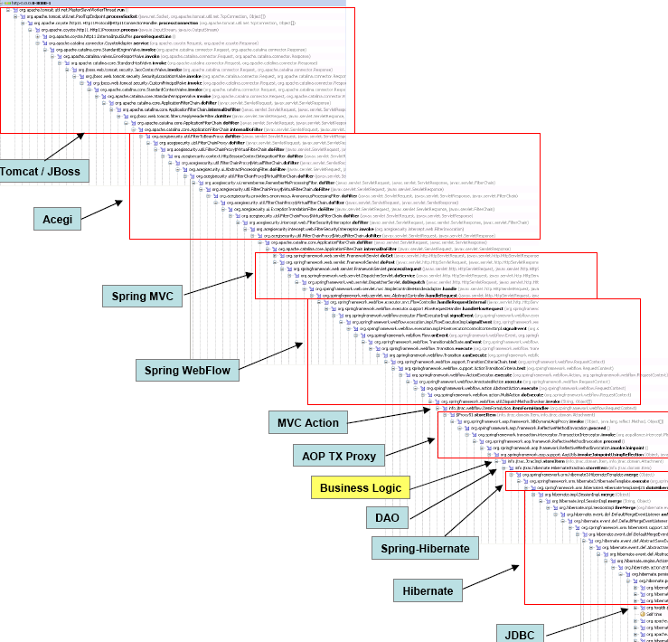
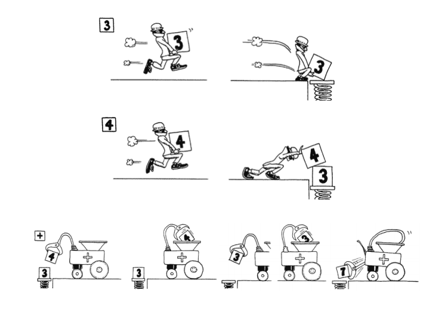
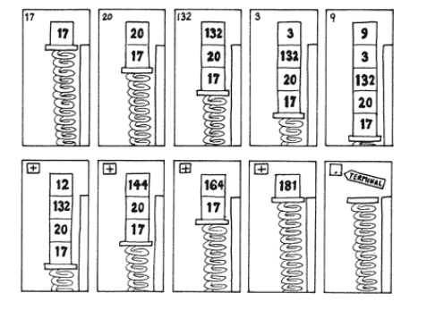
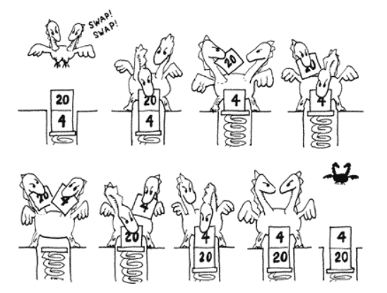
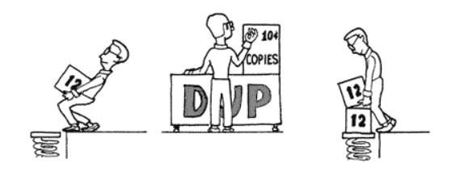

<!doctype html>
<html lang="en">
  <head>
    <meta charset="utf-8">

    <title>Virtual Machines</title>

    <meta name="author" content="Doug Hoyte">

    <meta name="apple-mobile-web-app-capable" content="yes" />
    <meta name="apple-mobile-web-app-status-bar-style" content="black-translucent" />

    <meta name="viewport" content="width=device-width, initial-scale=1.0, maximum-scale=1.0, user-scalable=no, minimal-ui">

    <link rel="stylesheet" href="../reveal.js/css/reveal.css">
    <link rel="stylesheet" href="../reveal.js/css/theme/black.css" id="theme">

    <!-- Code syntax highlighting -->
    <link rel="stylesheet" href="../reveal.js/lib/css/zenburn.css">

    <!-- Printing and PDF exports -->
    <script>
      var link = document.createElement( 'link' );
      link.rel = 'stylesheet';
      link.type = 'text/css';
      link.href = window.location.search.match( /print-pdf/gi ) ? '../reveal.js/css/print/pdf.css' : '../reveal.js/css/print/paper.css';
      document.getElementsByTagName( 'head' )[0].appendChild( link );
    </script>

    <!--[if lt IE 9]>
    <script src="../reveal.js/lib/js/html5shiv.js"></script>
    <![endif]-->

    <style>
      .reveal .slides h1, .reveal .slides h2, .reveal .slides h3 {
        text-transform: none;
      }

      .two-column {
        display: flex;
        flex-wrap: wrap;
      }

      .two-column em {
        margin: 20px;
      }

      .reveal .big-and-bold {
        font-weight: bold;
        font-size: 135%;
      }

      .reveal .shrunk-a-bit {
        font-size: 90%;
      }

      .reveal .shrunk-a-bit pre {
        width: 100%;
      }

      .reveal pre {
        width: 100%;
      }

      .reveal .highlight {
        color: yellow;
        font-weight: bold;
      }

      .reveal .highlightRed {
        color: red;
        font-weight: bold;
      }

      .reveal .highlightGreen {
        color: green;
        font-weight: bold;
      }

      .left {
        left:-8.33%;
        text-align: left;
        float: left;
        width:50%;
        z-index:-10;
      }

      .right {
        left:31.25%;
        top: 75px;
        text-align: left;
        float: right;
        z-index:-10;
        width:50%;
      }

      table {
        font-size: 80%;
      }
    </style>
  </head>

  <body>
    <div class="reveal">
      <div class="slides">

<!------------------------------------------------------->


<section data-markdown><script type="text/template">

## Virtual Machines

### Lesson 1: Machine Architecture

*Doug Hoyte, March 2020*

[https://is.gd/blockchainvm](https://is.gd/blockchainvm) FIXME

</script></section>


<section data-markdown><script type="text/template">

## Lesson Topics

* Machines

</script></section>


<section data-markdown><script type="text/template">

## Stored Programs

* We take it for granted now, but the entire concept of *software* was an important invention
* A computer should be able to be easily reconfigured for different tasks

</script></section>


<section data-markdown><script type="text/template">

## Jacquard Loom


</script></section>


<section data-markdown><script type="text/template">

## x-ware

* **Hardware**: The physical parts of the machine that cannot be reconfigured
* **Software**: Stored programs that can be installed, changed, upgraded
* **Firmware**: Something in the middle (ie a program stored on a special chip in a network card)

</script></section>


<section data-markdown><script type="text/template">

## Turing Machine

* A Turing Machine is a theoretical machine designed by Alan Turing
* It can be programmed to perform any arbitrary computation
* If you can show how to implement a Turing Machine in a programming language or virtual machine, it is called **turing complete**

</script></section>


<section data-markdown><script type="text/template">

## Turing Machine


</script></section>


<section data-markdown><script type="text/template">

## Turing Completeness

* No real-world machine has an *infinite* tape, so can never be truely Turing Complete
  * Informal "turing complete"
* In practice, informal "turing complete" means:
  * Can do loops
  * Backwards branches (same as loops)

</script></section>


<section data-markdown><script type="text/template">

## Harvard Architecture


* Memory used to store the program code is separate from the working memory used by the program

</script></section>


<section data-markdown><script type="text/template">

## Von Neumann Architecture


* There is only one class of memory that stores both program code and working memory
* General purpose computers today are (mostly) Von Neumann

</script></section>


<section data-markdown><script type="text/template">

## CPU Caches

* Accessing memory is slow so CPUs uses caches
  * Registers: Small number of super-fast temporary working slots inside the CPU core
  * Level 1 Cache: Small but very fast memory inside single core
  * Level 2 Cache: Larger but slower, inside single core
  * Level 3 Cache: Larger but slower, shared by cores

</script></section>


<section data-markdown><script type="text/template">

## Memory Hierarchy


</script></section>


<section data-markdown><script type="text/template">

## Latency Numbers

| Action        | ns  | us | ms |
| ------------- |---:|---:|---:|
| L1 cache reference | 0.5 | | |
| L2 cache reference | 7 | | |
| Main memory reference | 100 | | |
| SSD random read | 150,000 | 150 | |
| HDD random read | 10,000,000 | 10,000 | 10 |
| Send packet CA->Netherlands->CA | 150,000,000 | 150,000 | 150 |

</script></section>


<section data-markdown><script type="text/template">

## Time-scales

* An L1 cache reference takes a bit less than a nanosecond. How long is that?
* Light can travel about 1 foot (30 cm) in a nanosecond


</script></section>


<section data-markdown><script type="text/template">

## Humanized ([source](https://gist.github.com/hellerbarde/2843375))

| Action        | s  | Description |
| ------------- |---:|---:|
| L1 cache reference | 0.5 | One heart beat (0.5 s) |
| L2 cache reference | 7 | Long yawn |
| Main memory reference | 100 | Brushing your teeth |
| SSD random read | 150,000 | A weekend |
| HDD random read | 10,000,000 | A semester in university |
| Send packet CA->Netherlands->CA | 150,000,000 | Complete 4 year bachelor's degree |

</script></section>


<section data-markdown><script type="text/template">

## CISC/RISC

* CISC: Complex Instruction Set Computer
  * Complex CPUs with lots of instructions for lots of tasks
  * x86/amd64 (sort of, not black and white)
* RISC: Reduced Instruction Set Computer
  * Fewer instructions, complexity pushed to compilers
  * ARM (again, sort of)

</script></section>


<section data-markdown><script type="text/template">

## Virtual Machines

* Virtual Machines (VMs) are computers that are simulated in software
* Can run on a variety of different computers
* Can have more limited/restricted instruction sets than general computers

</script></section>


<section data-markdown><script type="text/template">

## JIT

* Sometimes the simulation programs are simple interpreters
* More sophisticated systems are possible, including Just-In-Time compilers (JITs)
* JITs convert virtual machine instructions to real machine instructions, and then run them

</script></section>


<section data-markdown><script type="text/template">

## 15 minute break

</script></section>


<section data-markdown><script type="text/template">

## Register Machines

* Registers are like variables inside a CPU
* Very fast to access, but limited number of them
* Compilers need to be smart and *allocate* registers
* When it can't hold everything it needs, it needs to temporarily *spill* some of the registers to memory

</script></section>


<section data-markdown><script type="text/template">

## Stack Machines

* Stack machines are alternative to register machines
* Easier to implement (either real or virtual machines)
* Easier to write compilers for

</script></section>


<section data-markdown><script type="text/template">

## What is a stack?


* Last-In-First-Out (LIFO) data-structure

</script></section>


<section data-markdown><script type="text/template">

## Activation Records

    function a() {
        let temp = 123;
        b();
    }

* While `b()` is executing, where is `temp` stored?
* It is put in a special **activation record** for the `a()` function, and stored on a **call-stack**

</script></section>


<section data-markdown><script type="text/template">

Sometimes it can get pretty deep...



</script></section>


<section data-markdown><script type="text/template">

## Blockchain VMs

* Both Bitcoin and Ethereum implement stack-based virtual machines
  * Bitcoin Script/EVM
* Even if you only use compilers (ie Solidity) it can be useful to understand how the VMs work

</script></section>


<section data-markdown><script type="text/template">

## Stack: Addition



<span style="font-size: 50%">(images from <a href="http://www.exemark.com/FORTH/StartingFORTHfromForthWebsitev9_2013_12_24.pdf">Starting Forth</a> by Leo Brodie)</span>

</script></section>


<section data-markdown><script type="text/template">

## Adding multiple elements



</script></section>


<section data-markdown><script type="text/template">

## Swap



</script></section>


<section data-markdown><script type="text/template">

## Dup



</script></section>


<section data-markdown><script type="text/template">

## Exercise 1: Forth

[forth.html](forth.html)

</script></section>


<section data-markdown><script type="text/template">

## 15 minute break

</script></section>


<section data-markdown><script type="text/template">

## Bitcoin Script

* In Bitcoin, every Unspent Transaction Output (UTXO) is protected by a **script**
* This is a program for a stack-based virtual machine
* The spender puts arguments onto the stack, then the transaction script is run
  * UTXO is spent if the script succeeds and leaves non-zero argument at top of stack

</script></section>


<section data-markdown><script type="text/template">

## Pay-To-Pubkey-Hash (P2PKH)

* This is the most common script used for bitcoin payments
* Exercise: Look at an [example transaction](https://www.blockchain.com/btc/tx/35cf4ca048872072fbad7b1875c95ff394b9d8da670563c029bf97e5084c4ce3)

<pre style="font-size: 40%"><code>OP_DUP OP_HASH160 fdd5d86d8e0bbda93f480c596808caa09b116f8c OP_EQUALVERIFY OP_CHECKSIG</code></pre>

</script></section>


<section data-markdown><script type="text/template">

## P2PKH Example

Code:

<pre style="font-size: 40%"><code>OP_DUP OP_HASH160 fdd5d86d... OP_EQUALVERIFY OP_CHECKSIG
</code></pre>

Stack:

<pre style="font-size: 40%"><code>[pub-key]
[sig]
</code></pre>

</script></section>


<section data-markdown><script type="text/template">

## P2PKH Example

Code:

<pre style="font-size: 40%"><code>OP_DUP OP_HASH160 fdd5d86d... OP_EQUALVERIFY OP_CHECKSIG
^^^
</code></pre>

Stack:

<pre style="font-size: 40%"><code>[pub-key]
[pub-key]
[sig]
</code></pre>

</script></section>


<section data-markdown><script type="text/template">

## P2PKH Example  

Code:

<pre style="font-size: 40%"><code>OP_DUP OP_HASH160 fdd5d86d... OP_EQUALVERIFY OP_CHECKSIG
       ^^^
</code></pre>

Stack:

<pre style="font-size: 40%"><code>[pub-key hash]
[pub-key]
[sig]
</code></pre>

</script></section>


<section data-markdown><script type="text/template">

## P2PKH Example 

Code:

<pre style="font-size: 40%"><code>OP_DUP OP_HASH160 fdd5d86d... OP_EQUALVERIFY OP_CHECKSIG
                  ^^^  
</code></pre>

Stack:

<pre style="font-size: 40%"><code>fdd5d86d...
[pub-key hash]
[pub-key]
[sig]
</code></pre>

</script></section>


<section data-markdown><script type="text/template">

## P2PKH Example

Code:

<pre style="font-size: 40%"><code>OP_DUP OP_HASH160 fdd5d86d... OP_EQUALVERIFY OP_CHECKSIG
                              ^^^
</code></pre>

Stack:

<pre style="font-size: 40%"><code>[pub-key]
[sig]
</code></pre>

</script></section>


<section data-markdown><script type="text/template">

## P2PKH Example

Code:

<pre style="font-size: 40%"><code>OP_DUP OP_HASH160 fdd5d86d... OP_EQUALVERIFY OP_CHECKSIG
                                             ^^^
</code></pre>

Stack:

<pre style="font-size: 40%"><code>1
</code></pre>

</script></section>


<section data-markdown><script type="text/template">

## End of lesson

</script></section>


<!------------------------------------------------------->


      </div>

    </div>

    <script src="../reveal.js/lib/js/head.min.js"></script>
    <script src="../reveal.js/js/reveal.js"></script>

    <script>

      // Full list of configuration options available at:
      // https://github.com/hakimel/reveal.js#configuration
      Reveal.initialize({
        controls: true,
        progress: true,
        history: true,
        center: true,

        transition: 'none', // none/fade/slide/convex/concave/zoom

	math: {
          mathjax: '../lib/MathJax/MathJax.js',
          config: 'TeX-AMS_SVG-full',
	},

        // Optional reveal.js plugins
        dependencies: [
          { src: '../reveal.js/plugin/markdown/marked.js', condition: function() { return !!document.querySelector( '[data-markdown]' ); } },
          { src: '../reveal.js/plugin/markdown/markdown.js', condition: function() { return !!document.querySelector( '[data-markdown]' ); } },
          { src: '../reveal.js/plugin/highlight/highlight.js', async: true, callback: function() { hljs.initHighlightingOnLoad(); } },
          { src: '../reveal.js/plugin/math/math.js', async: true },
        ]
      });

    </script>

  </body>
</html>
